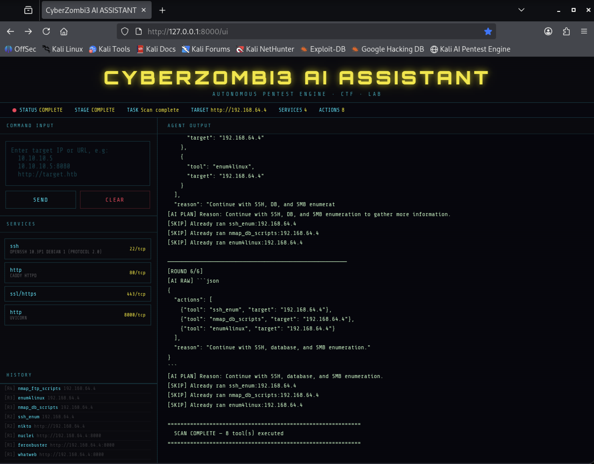

An autonomous recon and enumeration engine with an LLM-driven planning loop.

The AI Pentest Agent is an autonomous reconnaissance and enumeration engine. Give it a target — an IP, host:port, or URL — and it plans a sequence of scanning actions with an LLM, executes them using real tools, reads back the results, and decides what to run next. It keeps going, round after round, until enumeration is genuinely exhausted, then reports what it found. The whole thing runs behind a browser-based dashboard served over FastAPI and WebSockets.
Each round, the agent asks the model for the next batch of actions based on what's been discovered so far (open ports, service banners, previous tool output). It tracks everything it has already run against a target so it never repeats a scan pointlessly — the log below shows it recognising and skipping tools it already executed before moving to the next round:
[ROUND 6/6]
[AI RAW] ```json
{
"actions": [
{"tool": "ssh_enum", "target": "192.168.64.4"},
{"tool": "nmap_db_scripts", "target": "192.168.64.4"},
{"tool": "enum4linux", "target": "192.168.64.4"}
],
"reason": "Continue with SSH, database, and SMB enumeration."
}
```
[AI PLAN] Reason: Continue with SSH, database, and SMB enumeration.
[SKIP] Already ran ssh_enum:192.168.64.4
[SKIP] Already ran nmap_db_scripts:192.168.64.4
[SKIP] Already ran enum4linux:192.168.64.4
================================================================
SCAN COMPLETE - 8 tool(s) executed
================================================================
Against a lab target, the agent fingerprinted four live services and picked its tool chain accordingly:
ssh OpenSSH 10.3p1 Debian 1 (protocol 2.0) 22/tcp http Caddy httpd 80/tcp ssl/https 443/tcp http Uvicorn 8000/tcp
Depending on what it finds, the agent reaches for: nmap service/DB scripts,
ssh_enum, enum4linux, nikto, nuclei,
feroxbuster, and whatweb — the same tools I'd reach for
manually, just sequenced and de-duplicated automatically.
- Multi-round AI planning loop with automatic de-duplication
- Service-aware tool selection (SSH, SMB, HTTP, databases)
- Live action history log per round
- Browser dashboard (FastAPI + WebSockets) for live target input and streamed output
- Structured, reviewable output built for CTF and lab environments
Recon and enumeration are the most repetitive part of any pentest or CTF box — the same handful of tools, run in roughly the same order, every time. This agent automates that first pass so I can spend my own time on the interesting part: working out how to actually get in.